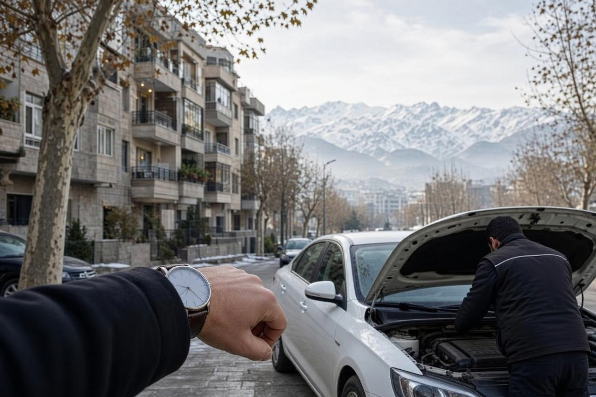
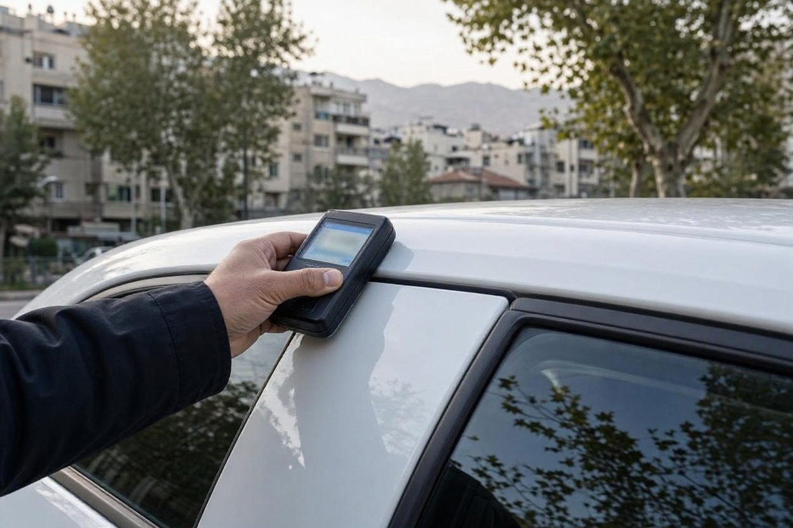
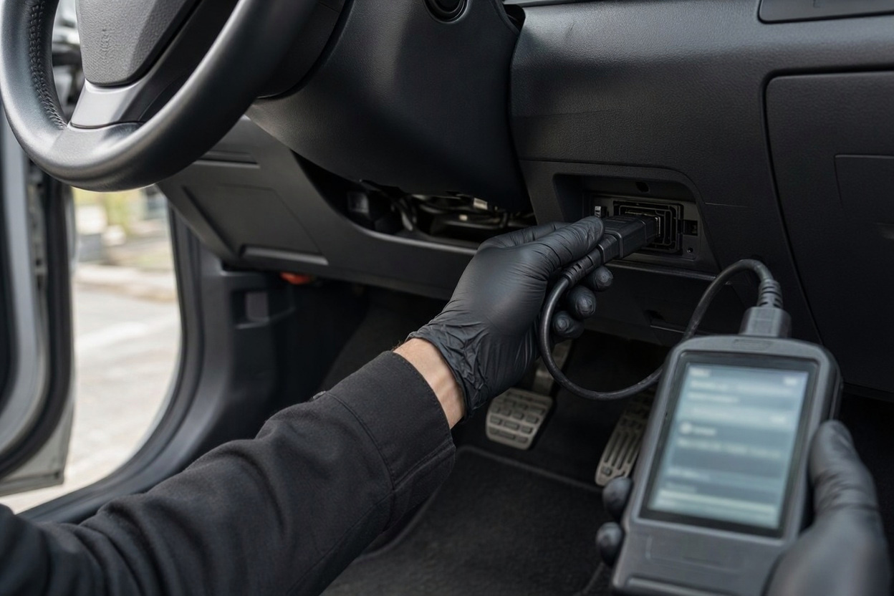
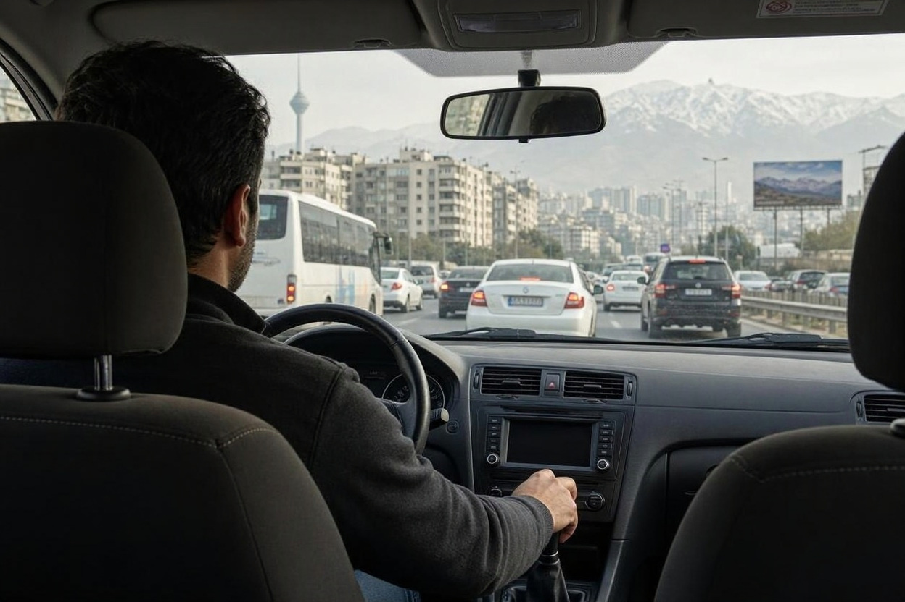
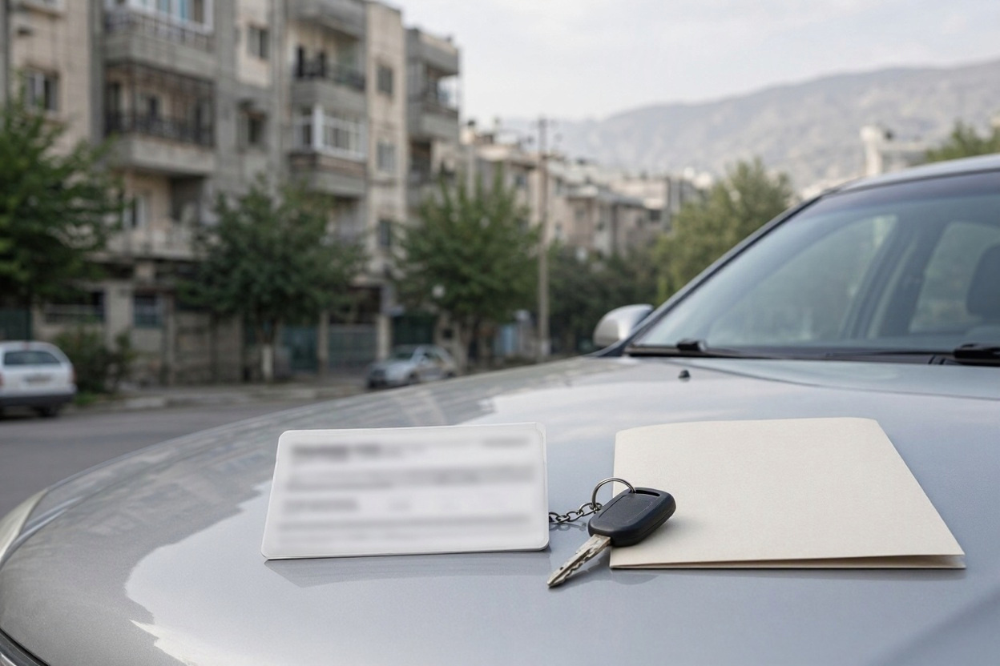

کارشناسی خودرو چقدر طول می کشد؟ زمان رنگ، فنی و دیاگ
فروشنده گفته فقط تا ظهر وقت دارد و بعدازظهر خریدار دیگری میآید. شما هم برای همان روز کارشناس گرفتهاید و نمیدانید آیا بررسی تا قبل از ظهر تمام میشود یا وسط تست رانندگی باید کار را نیمهکاره بگذارید. سؤال ساده است، اما جواب درستش به چند چیز بستگی دارد.
اینکه کارشناسی خودرو چقدر طول می کشد، عدد ثابتی ندارد؛ برگهی رنگ زودتر از یک بررسی کامل با تست رانندگی تمام میشود و هر خودرو هم شرایط خودش را دارد. در این راهنمای تیم کارشناسی کارماچک توضیح میدهیم هر مرحله چرا وقت میبرد، چه چیزی کار را طولانیتر میکند و کارشناسی بیش از حد سریع چه نشانهای دارد.
مدت کارشناسی خودرو به دامنهی بررسی بستگی دارد. بررسی رنگ و بدنه کوتاهترین بخش است، دیاگ وقت کمی میگیرد، و بخش فنی همراه با گرم شدن موتور و تست رانندگی بیشترین زمان را میخواهد. نوع خودرو، گیربکس، محل بررسی و ایرادهایی که پیدا میشوند هم زمان را تغییر میدهند. زمان تقریبی را هنگام رزرو برای همان خودرو بپرسید.
خلاصه در یک دقیقه
- برای کارشناسی خودرو زمان استاندارد و همگانی وجود ندارد؛ هر مجموعه بر اساس دامنهی کار خودش زمان اعلام میکند.
- تست رانندگی و رسیدن موتور به دمای کارکرد، معمولاً بیشترین سهم زمان را در بخش فنی دارند.
- پیدا شدن یک نشانهی مشکوک، بررسی را طولانیتر میکند و این طبیعی است.
- کارشناسی «کامل» بدون تست رانندگی یا روشن کردن موتور سرد، هر قدر هم سریع باشد، کامل نیست.
- بین کارشناسی و امضای قولنامه زمان کافی بگذارید تا گزارش را با حوصله بخوانید.
چرا کارشناسی خودرو زمان ثابتی ندارد؟
چون «کارشناسی» در بازار به کارهای متفاوتی گفته میشود. یک نفر فقط ضخامت رنگ قطعات را میسنجد و دیگری موتور، گیربکس، جلوبندی، دیاگ، شاسی و تست رانندگی را هم بررسی میکند. طبیعی است که این دو کار یک زمان نداشته باشند.
چهار عامل اصلی زمان را تعیین میکنند:
- دامنهی بررسی: فقط رنگ، فقط فنی، یا کارشناسی کامل فنی و بدنه.
- نوع خودرو: خودروی بزرگتر یا وارداتی با قطعات و سیستمهای بیشتر، وقت بیشتری میگیرد.
- محل بررسی: در مرکز کارشناسی با بالابر، زیر خودرو راحتتر دیده میشود؛ در محل، کار به نور و فضای موجود بستگی دارد.
- وضعیت خودرو: خودرویی که نشانهی مشکوک دارد، بررسی دقیقتری لازم دارد.
به همین دلیل بهترین کار این است که هنگام رزرو، مدل و سال خودرو و نوع بررسی را بگویید و زمان تقریبی را برای همان خودرو بپرسید.
هر مرحله کارشناسی چرا وقت می برد؟
اگر بدانید هر بخش چه کاری انجام میدهد، راحتتر میفهمید کجا زمان صرف شده و کجا ممکن است کاری جا افتاده باشد.
کارشناسی رنگ و بدنه
کارشناس ضخامت رنگ را روی تکتک قطعات، و معمولاً در چند نقطه از هر قطعه، اندازه میگیرد و عددها را با هم مقایسه میکند. سقف، ستونها، درزها، پیچهای گلگیر و درها و شیشهها هم دیده میشوند. هرچه تعداد قطعات بیشتر باشد یا عددی با بقیه نخواند، بررسی طول میکشد.

بررسی شاسی و زیر خودرو
شاسیها، سینیها، کف صندوق و محل جوشها با نور و از نزدیک دیده میشوند. اگر بالابر در دسترس نباشد، کارشناس باید از زیر سپر و کنار چرخها نگاه کند که هم زمان میبرد و هم دید کاملی نمیدهد.
کارشناسی فنی موتور و گیربکس
بخشی از بررسی فنی باید با موتور سرد انجام شود، مثل استارت اول و دود اگزوز. بخشی دیگر به موتور گرم نیاز دارد، مثل رفتار سیستم خنککاری و صدای موتور در دمای کارکرد. فاصلهی این دو حالت، یعنی زمان گرم شدن موتور، بخشی از مدت کارشناسی است که نمیشود حذفش کرد.
دیاگ
اتصال دستگاه و خواندن خطاها نسبت به بقیهی بخشها زمان کمی میگیرد، اما تفسیر نتیجه وقت میخواهد. اگر خطایی ثبت شده باشد، کارشناس باید بفهمد به کدام بخش مربوط است. در بسیاری از خودروها، وضعیت آمادگی سیستمهای عیبیابی ممکن است نشان دهد خطاها بهتازگی پاک شدهاند؛ تفسیرش با کارشناس است. جزئیات بیشتر را در راهنمای دیاگ خودرو قبل از خرید آوردهایم.

تست رانندگی
تست رانندگی معمولاً طولانیترین بخش بررسی فنی است. ضربهی تعویض دنده، لرزش فرمان، کشیدن به یک سمت و صدای جلوبندی فقط در حرکت معلوم میشوند. مسیر باید هم سرعت پایین و توقفوحرکت داشته باشد و هم بخشی با سرعت بیشتر.
| مرحله | چه چیزی زمانش را زیاد میکند | نشانهی عجله |
|---|---|---|
| رنگ و بدنه | تعداد قطعات، عددهای ناهمخوان، قطعات غیرفلزی | فقط چند قطعه اندازهگیری شود |
| شاسی | نبود بالابر، نور کم، نشانهی جوش یا ترمیم | زیر خودرو و کف صندوق دیده نشود |
| فنی | گرم شدن موتور، نشتی یا صدای مشکوک | موتور فقط گرم بررسی شود |
| دیاگ | تعداد خطاها و نیاز به تفسیر | فقط گفته شود «خطا ندارد» |
| تست رانندگی | گیربکس اتوماتیک، ترافیک، نیاز به تکرار | تست انجام نشود یا فقط دور کوچه باشد |
زمان بررسی را قبل از روز معامله بدانید
اگر میخواهید برنامهی روز معامله را درست بچینید، هنگام ثبت درخواست مدل خودرو و نوع بررسی را بگویید و زمان تقریبی را بپرسید.
ثبت درخواست کارشناسیچه چیزهایی کارشناسی را طولانی تر می کند؟
بعضی عوامل به خودرو مربوطاند و بعضی به شرایط روز بررسی. وقتی اینها را بدانید، تعجب نمیکنید که چرا کار بیشتر از انتظار طول کشید.
- گیربکس اتوماتیک یا CVT: رفتار گیربکس باید در چند وضعیت رانندگی دیده شود و تست کوتاه کافی نیست.
- خودروی وارداتی یا پرامکانات: سیستمها و قطعات بیشتری برای بررسی دارد.
- پیدا شدن نشانهی مشکوک: مثلاً عدد غیرعادی ضخامت رنگ، که کارشناس را به بررسی درز، پیچ و قطعات اطراف میکشاند.
- موتور گرم در لحظهی رسیدن: اگر فروشنده خودرو را از قبل روشن کرده باشد، بخش استارت سرد یا باید منتظر خنک شدن بماند یا عملاً از دست میرود.
- نور و هوا: بررسی بدنه در شب، پارکینگ تاریک یا زیر باران کندتر و کمدقتتر است.
- ترافیک و مسیر: در کارشناسی در محل، زمان رسیدن کارشناس و پیدا کردن مسیر مناسب تست رانندگی هم به کل وقت اضافه میشود.

کارشناسی خیلی سریع نشانه چیست؟
سرعت بهتنهایی بد نیست. کارشناس باتجربه با ابزار مناسب ممکن است کار را منظم و سریع جلو ببرد. مسئله وقتی است که سرعت از حذف بعضی مراحل آمده باشد. سراغ این سؤالها بروید:
- آیا موتور در حالت سرد روشن شد، یا کارشناس خودرو را گرم تحویل گرفت؟
- آیا تست رانندگی انجام شد و مسیرش فقط یک دور کوتاه نبود؟
- آیا ضخامت رنگ روی همهی قطعات، از جمله سقف و ستونها، اندازهگیری شد؟
- آیا زیر خودرو و کف صندوق دیده شد؟
- آیا گزارش برای هر بخش نتیجهی جداگانه دارد؟
اگر واقعاً وقت تنگ است، راه درست حذف مراحل نیست؛ بهتر است زمان معامله را جابهجا کنید. در مطلب کارشناسی خودرو فوری توضیح دادهایم وقتی فرصت کم است چطور سریع کارشناس بگیرید بدون اینکه دقت قربانی شود.
برای روز کارشناسی چطور برنامه ریزی کنیم؟
بیشتر تأخیرهای روز کارشناسی با چند هماهنگی ساده کم میشوند.
- زمان تقریبی را بپرسید:هنگام رزرو، مدل، سال، نوع گیربکس و دامنهی بررسی را بگویید تا زمان اعلامی به واقعیت نزدیک باشد.
- با فروشنده دربارهی موتور سرد هماهنگ کنید:از او بخواهید خودرو پیش از رسیدن کارشناس روشن نشود.
- نور روز را انتخاب کنید:بررسی بدنه در روز سریعتر و دقیقتر است و برای تست رانندگی هم دید بهتری دارید.
- مدارک را آماده کنید:کارت خودرو و مدارک لازم دم دست باشند تا تطبیق مشخصات معطلی نداشته باشد.
- برای بعد از کارشناسی وقت بگذارید:قولنامه یا انتقال سند را به همان دقیقهی پایان کارشناسی گره نزنید تا بتوانید گزارش را بخوانید و سؤال بپرسید.

کارماچک در این مرحله چه کمکی می کند؟
کارماچک یک ارائهدهندهی خدمات کارشناسی خودرو در ایران است که وضعیت فنی، رنگ و بدنه را بررسی میکند. ما فقط ایراد خودرو را شناسایی نمیکنیم؛ اثر آن روی هزینه تعمیر و ارزش واقعی معامله را هم مشخص میکنیم.
جمع بندی
اینکه کارشناسی خودرو چقدر طول می کشد، بیشتر از هر چیز به دامنهی بررسی برمیگردد. رنگ و دیاگ سهم کمتری از زمان دارند و بخش فنی با موتور سرد، گرم شدن موتور و تست رانندگی بیشترین وقت را میگیرد. برای روز معامله زمان کافی بگذارید و اگر مجبور شدید بین سرعت و کامل بودن انتخاب کنید، کامل بودن را انتخاب کنید و زمان معامله را جابهجا کنید.
کارشناسی را با زمان کافی رزرو کنید
اگر خودرویی را برای خرید انتخاب کردهاید، یک بررسی کامل فنی و بدنه با زمان مناسب، تصمیم شما را روشنتر میکند.
رزرو کارشناسیسؤالات متداول
کارشناسی رنگ زودتر از کارشناسی فنی تمام میشود؟
معمولاً بله. کارشناسی رنگ به اندازهگیری ضخامت و بازدید بدنه محدود است، اما کارشناسی فنی به موتور سرد، گرم شدن موتور، دیاگ و تست رانندگی نیاز دارد. البته اگر در بدنه نشانهی مشکوکی پیدا شود، بررسی رنگ و شاسی هم طولانیتر میشود.
دیاگ خودرو چقدر وقت میگیرد؟
اتصال دستگاه و خواندن خطاها نسبت به بقیهی مراحل زمان کمی میبرد. زمان اصلی صرف تفسیر خطاها و تطبیق آنها با رفتار خودرو در تست رانندگی میشود. اگر خطایی ثبت شده باشد، کارشناس ممکن است بخش مربوط را دقیقتر بررسی کند و زمان بیشتر شود.
کارشناسی در محل بیشتر طول میکشد یا در مرکز کارشناسی؟
بستگی به شرایط دارد. در محل، زمان رسیدن کارشناس و پیدا کردن مسیر تست رانندگی اضافه میشود و بررسی زیر خودرو بدون بالابر محدودتر است. در مرکز، رفتوآمد خودرو را باید حساب کنید. زمان دقیق را برای هر دو حالت هنگام رزرو بپرسید.
چرا کارشناسی خودروی من بیشتر از زمان اعلامشده طول کشید؟
رایجترین دلیل، پیدا شدن نشانهای است که بررسی بیشتری لازم دارد، مثل عدد غیرعادی ضخامت رنگ یا رفتار مشکوک گیربکس. موتور گرم، نور کم، ترافیک یا آماده نبودن مدارک هم زمان را بیشتر میکنند. اگر دلیلش روشن نیست، از کارشناس بپرسید.
میشود برای صرفهجویی در زمان، تست رانندگی را حذف کرد؟
توصیه نمیشود. بسیاری از ایرادهای گیربکس، فرمان، جلوبندی و ترمز فقط در حرکت معلوم میشوند و دیاگ یا بازدید خودروی پارکشده جای آن را نمیگیرد. اگر وقت کم است، بهتر است زمان معامله را جابهجا کنید تا بخشی از بررسی را حذف نکنید.
آیا باید در طول کارشناسی کنار خودرو بمانم؟
اگر بتوانید، مفید است. حضور شما کمک میکند ایرادها را از نزدیک ببینید و سؤالهایتان را همان لحظه بپرسید. در تست رانندگی هم میتوانید رفتار خودرو را حس کنید. حتی اگر حاضر نباشید، گزارش مکتوب با نتیجهی جداگانهی هر بخش را بخواهید.